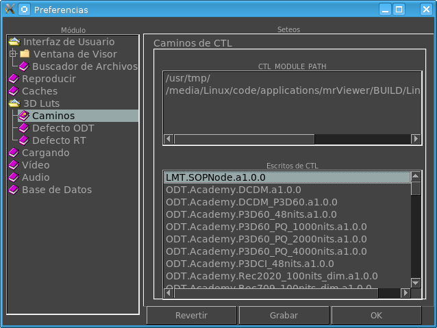

|  |
DisplayEstos directorios son aquellos donde mrViewer mirará para encontrar CTL scripts. El valor es tomado de la variable de entorno CTL_MODULE_PATH. Esta sección muestra todas las CTL scripts a ser encontradas en el CTL_MODULE_PATH. Siguiendo la convención, IDT para Input Display Transforms (Transformación de Input de Display), scripts con el prefijo ODT serían Output Display Transform (Transformación de Display de Salida), scripts con el prefijo RRT serian usadass para Reference Rendering Transform (Transformación de Referencia de Rendering), los prefijos LMT son para scripts de Look Modification Transform (Transformación de Modificación de Look). Scripts auxiliares no tienen prefijos. |